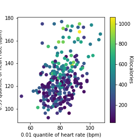

End-to-End Data Science, Statistical Modeling & Interactive Analytics
A comprehensive engineering showcase demonstrating end-to-end analytical rigor: problem formulation, data acquisition, automated data wrangling, missing-value imputation, rigorous statistical and ML modeling, and bespoke browser-native interactive analytics web applications.
Interactive Project Showcase
Each project includes a dedicated web platform with live simulators, Chart.js diagnostics, and GitHub source code.

Cracow Real Estate Valuation & ML Intelligence
Residential property price prediction combining Multi-Layer Perceptrons (MLP) and Gradient Boosting into a VotingRegressor ensemble. Features spatial district encoding and live valuation simulator.

Polar Watch Biometrics & Mixed Effects Calorie Modeling
Wearable fitness telemetry analyzed with Statsmodels MixedLM (REML). Accounts for intra-subject variance across disciplines with VIF collinearity pruning and live calorie simulator.

FX Trading Performance & Monte Carlo Risk Analytics
92 algorithmic trades evaluated against geometric loss streak distributions and 100K-iteration Monte Carlo resamplings. Features in-browser 1,000-path stochastic equity simulator.

Global Terrorism Database: Threat Matrix & Spatial EDA
Multi-decade intelligence EDA tracking 83,606 incidents from 2007–2017. Features animated time-lapse casualty playback, tactical group radar, and weapon attribution breakdown.

COVID-19 Global Trajectories & Socioeconomic Matrix
Harmonizes JHU CSSE surveillance with World Bank socioeconomic metrics. Features Day T0 outbreak alignment, exponential doubling curves, and bivariate scatter regression studio.
Full-Stack Data Science Architecture
All 5 projects are fully functional as standalone websites locally and synced to dedicated GitHub repositories. Zero external backend dependencies required for live simulation and interactive exploration.
Cross-Project Methodology & Engineering Matrix
Comparing technical frameworks, statistical formulations, and real-world impact across domains
| Project Domain | Data Scale | Core Algorithm / Method | Best Performance Metric | Interactive Web Feature |
|---|---|---|---|---|
| Cracow Real Estate | 10,484 Flats | VotingRegressor (MLP + GBR) | RMSE 116,478 PLN (MSLE 0.03) | Live Property Valuation & District Estimator |
| Polar Watch Telemetry | 283 Workouts | Mixed Linear Models (REML) | RMSE 61.2 kcal (-23% vs OLS) | Biometric Calorie & Cardiac Predictor |
| FX Algorithmic Trading | 92 Trades | Monte Carlo + Geometric Loss PMF | Profit Factor 1.60 (Payoff 5.22x) | 1,000-Path Live Equity Monte Carlo Engine |
| Global Terrorism EDA | 83,606 Incidents | Spatial Aggregation & GGplot2 | 180K+ Fatalities Decadal Matrix | Time-Lapse Threat & Group Tactical Radar |
| COVID-19 Epidemiology | 35M+ Cases | T0 Alignment + Bivariate OLS | Rural Pop Corr r = -0.46 | T0 Doubling Curve & Socioeconomic Studio |